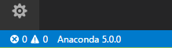
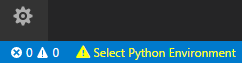
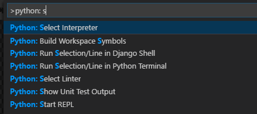
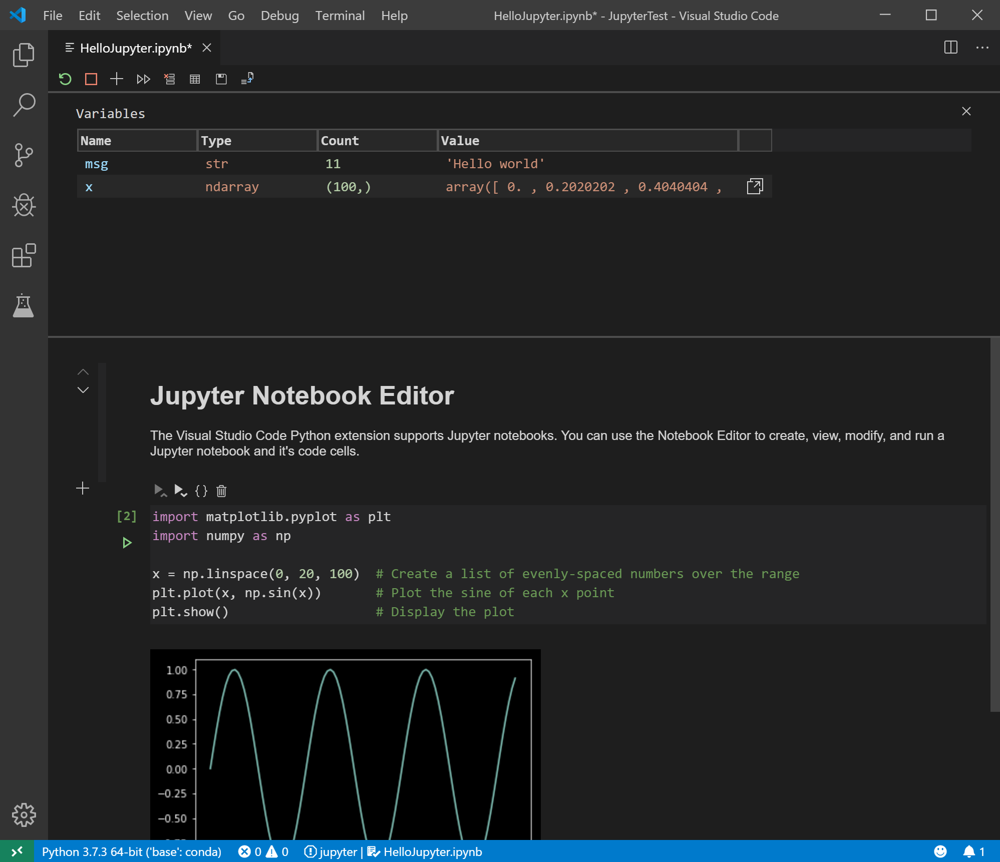
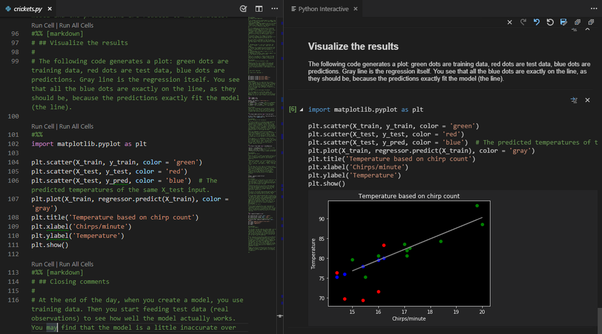

Python in Visual Studio Code
Working with Python in Visual Studio Code, using the Microsoft Python extension, is simple, fun, and productive. The extension makes VS Code an excellent Python editor, and works on any operating system with a variety of Python interpreters. It leverages all of VS Code's power to provide auto complete and IntelliSense, linting, debugging, and unit testing, along with the ability to easily switch between Python environments, including virtual and conda environments.
This article provides only an overview of the different capabilities of the Python extension for VS Code. For a walkthrough of editing, running, and debugging code, use the button below.
Install Python and the Python extension
The tutorial guides you through installing Python and using the extension. You must install a Python interpreter yourself separately from the extension. For a quick install, use Python 3.7 from python.org and install the extension from the VS Code Marketplace.
Once you have a version of Python installed, activate it using the Python: Select Interpreter command. If VS Code doesn't automatically locate the interpreter you're looking for, refer to Environments - Manually specify an interpreter.
You can configure the Python extension through settings. Learn more in the Python Settings reference.
Windows Subsystem for Linux: If you are on Windows, WSL is a great way to do Python development. You can run Linux distributions on Windows and Python is often already installed. When coupled with the Remote - WSL extension, you get full VS Code editing and debugging support while running in the context of WSL. To learn more, go to Developing in WSL or try the Working in WSL tutorial.
Insiders program
The Insiders program allows you to try out and automatically install new versions of the Python extension prior to release, including new features and fixes.
If you'd like to opt into the program, you can either open the Command Palette (kb(workbench.action.showCommands)) and select Python: Switch to Insiders Daily/Weekly Channel or else you can open settings (kb(workbench.action.openSettings)) and look for Python: Insiders Channel to set the channel to "daily" or "weekly".
Run Python code
To experience Python, create a file (using the File Explorer) named hello.py and paste in the following code (assuming Python 3):
print("Hello World")
The Python extension then provides shortcuts to run Python code in the currently selected interpreter (Python: Select Interpreter in the Command Palette):
- In the text editor: right-click anywhere in the editor and select Run Python File in Terminal. If invoked on a selection, only that selection is run.
- In Explorer: right-click a Python file and select Run Python File in Terminal.
You can also use the Terminal: Create New Integrated Terminal command to create a terminal in which VS Code automatically activates the currently selected interpreter. See Environments below. The Python: Start REPL activates a terminal with the currently selected interpreter and then runs the Python REPL.
For a more specific walkthrough on running code, see the tutorial.
Autocomplete and IntelliSense
The Python extension supports code completion and IntelliSense using the currently selected interpreter. IntelliSense is a general term for a number of features, including intelligent code completion (in-context method and variable suggestions) across all your files and for built-in and third-party modules.
IntelliSense quickly shows methods, class members, and documentation as you type, and you can trigger completions at any time with kb(editor.action.triggerSuggest). You can also hover over identifiers for more information about them.

Tip: Check out the IntelliCode extension for VS Code (preview). IntelliCode provides a set of AI-assisted capabilities for IntelliSense in Python, such as inferring the most relevant auto-completions based on the current code context.
Linting
Linting analyzes your Python code for potential errors, making it easy to navigate to and correct different problems.
The Python extension can apply a number of different linters including Pylint, pycodestyle, Flake8, mypy, pydocstyle, prospector, and pylama. See Linting.
Debugging
No more print statement debugging! Set breakpoints, inspect data, and use the debug console as you run your program step by step. Debug a number of different types of Python applications, including multi-threaded, web, and remote applications.
For Python-specific details, including setting up your launch.json configuration and remote debugging, see Debugging. General VS Code debugging information is found in the debugging document. The Django and Flask tutorials also demonstrate debugging in the context of those web apps, including debugging Django page templates.
Environments
The Python extension automatically detects Python interpreters that are installed in standard locations. It also detects conda environments as well as virtual environments in the workspace folder. See Configuring Python environments. You can also use the python.pythonPath setting to point to an interpreter anywhere on your computer.
The current environment is shown on the left side of the VS Code Status Bar:

The Status Bar also indicates if no interpreter is selected:

The selected environment is used for IntelliSense, auto-completions, linting, formatting, and any other language-related feature other than debugging. It is also activated when you use run Python in a terminal.
To change the current interpreter, which includes switching to conda or virtual environments, select the interpreter name on the Status Bar or use the Python: Select Interpreter command.

VS Code prompts you with a list of detected environments as well as any you've added manually to your user settings (see Configuring Python environments).
Installing packages
Packages are installed using the Terminal panel and commands like pip install <package_name> (Windows) and pip3 install <package_name> (macOS/Linux). VS Code installs that package into your project along with its dependencies. Examples are given in the Python tutorial as well as the Django and Flask tutorials.
Jupyter notebooks
If you open a Jupyter notebook file (.ipynb) in VS Code, you can use the Jupyter Notebook Editor to directly view, modify, and run code cells.

You can also convert and open the notebook as a Python code file. The notebook's cells are delimited in the Python file with #%% comments, and the Python extension shows Run Cell or Run All Cells CodeLens. Selecting either CodeLens starts the Jupyter server and runs the cell(s) in the Python interactive window:

Opening a notebook as a Python file allows you to use all of VS Code's debugging capabilities. You can then save the notebook file and open it again as a notebook in the Notebook Editor, Jupyter, or even upload it to a service like Azure Notebooks.
Using either method, Notebook Editor or a Python file, you can also connect to a remote Jupyter server for running the code. For more information, see Jupyter support.
Testing
The Python extension supports testing with the unittest, pytest, and nose test frameworks.
To run tests, you enable one of the frameworks in settings. Each framework also has specific settings, such as arguments that identify paths and patterns for test discovery.
Once discovered, VS Code provides a variety of commands (on the Status Bar, the Command Palette, and elsewhere) to run and debug tests, including the ability to run individual test files and individual methods.
Configuration
The Python extension provides a wide variety of settings for its various features. These are described on their relevant topics, such as Editing code, Linting, Debugging, and Testing. The complete list is found in the Settings reference.
Other popular Python extensions
The Microsoft Python extension provides all of the features described previously in this article. Additional Python language support can be added to VS Code by installing other popular Python extensions.
- Open the Extensions view (
kb(workbench.view.extensions)). - Filter the extension list by typing 'python'.
The extensions shown above are dynamically queried. Click on an extension tile above to read the description and reviews to decide which extension is best for you. See more in the Marketplace.
Next steps
- Python Hello World tutorial - Get started with Python in VS Code.
- Editing Python - Learn about auto-completion, formatting, and refactoring for Python.
- Basic Editing - Learn about the powerful VS Code editor.
- Code Navigation - Move quickly through your source code.
- Django tutorial
- Flask tutorial